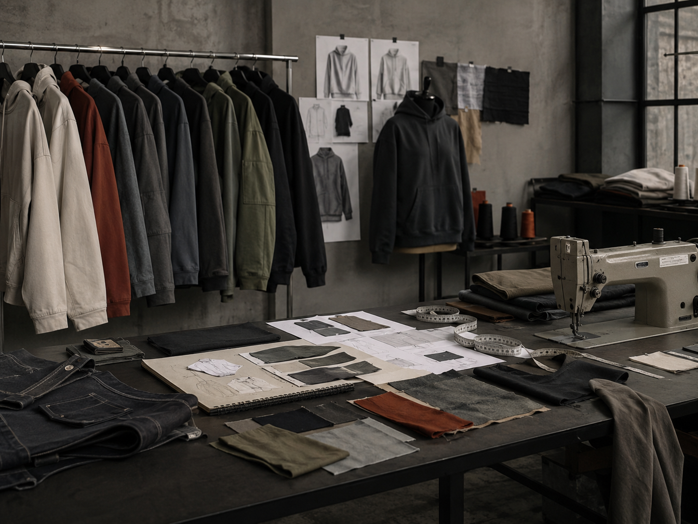
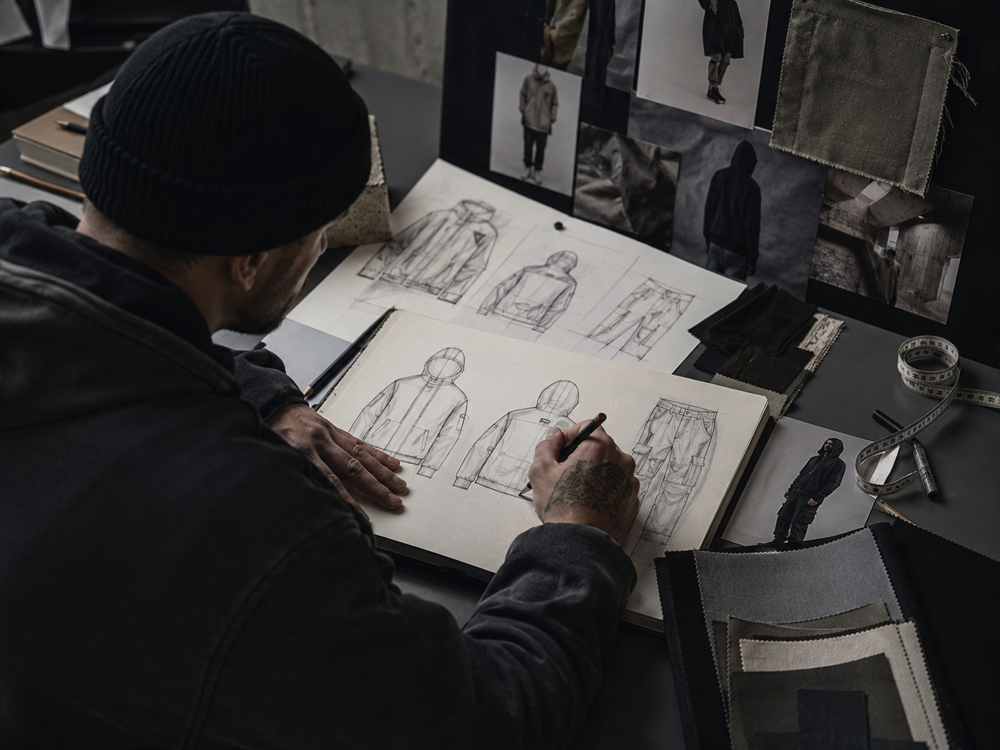
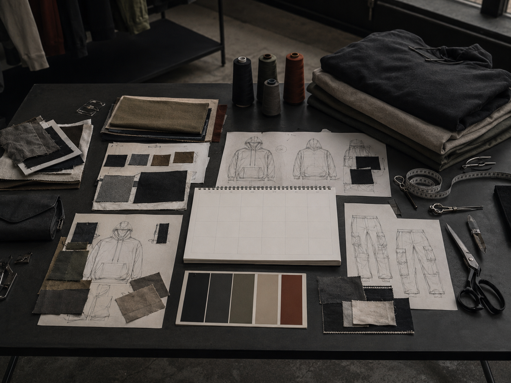
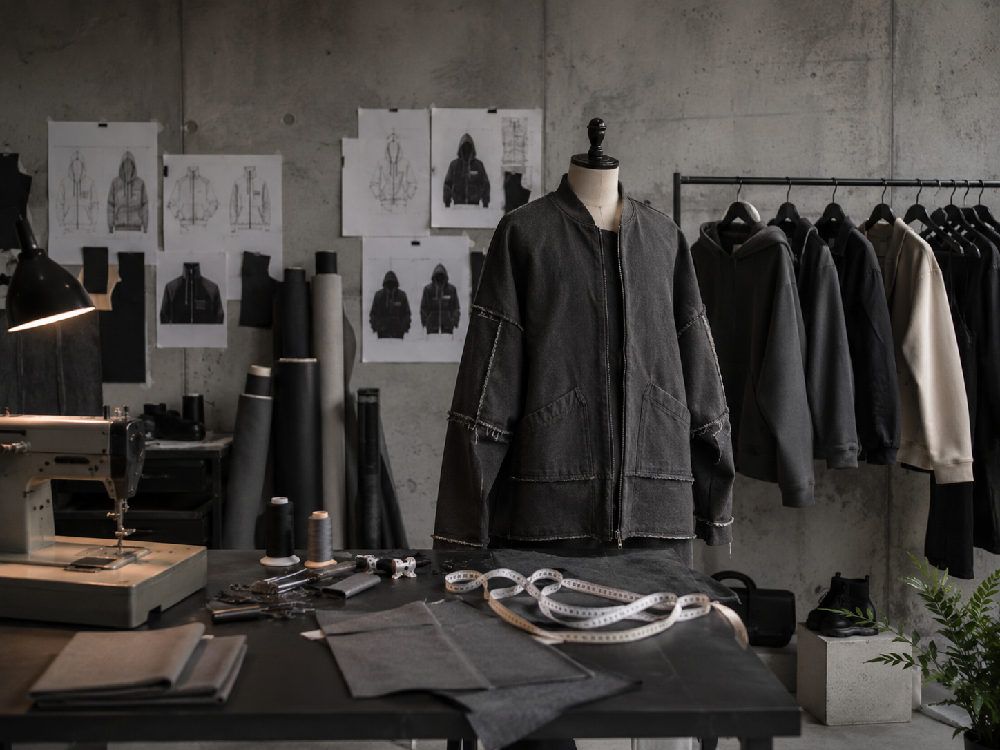
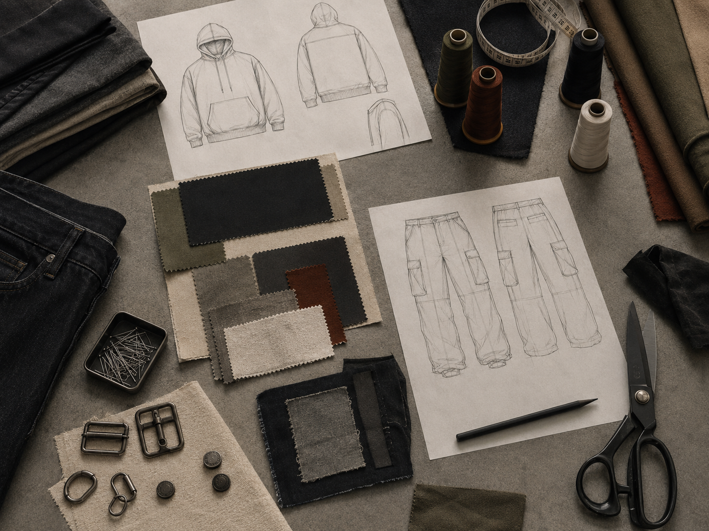
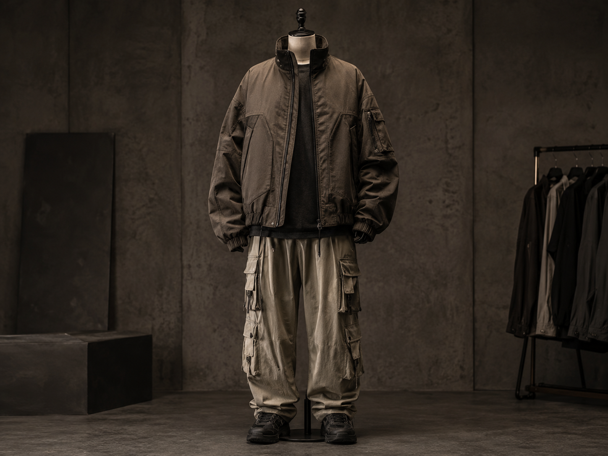
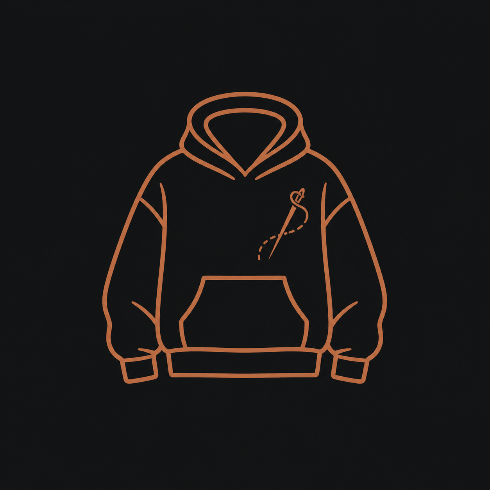

Streetwear design is the process of creating clothing that feels wearable, bold,
and connected to culture. It combines fashion, branding, graphics, fabric, fit,
and attitude into pieces people can actually wear every day.
I like streetwear because it is creative but still practical. A hoodie, jacket,
shirt, or pair of pants can look simple at first, but the fit, material, logo
placement, stitching, and color choices can make the piece feel completely different.
◆ ◆ ◆

Streetwear starts with identity, materials, and strong visual direction.
Fit
Streetwear depends on silhouette, proportion, oversized shapes, and clean layering.
Graphics
Logos, prints, embroidery, and placement choices give each piece its identity.
Materials
Heavy cotton, denim, canvas, fleece, nylon, and washed fabrics create the final feel.
Who: About Me
I am interested in creating streetwear because clothing is one of the clearest ways
to show personality, confidence, and taste without saying anything.
Streetwear design requires creativity, but it also requires control. The piece has to
look good, fit correctly, and feel natural when someone wears it in real life.
◆ ◆ ◆

Streetwear design begins with sketches, references, and a clear mood.
I like clothing that feels clean, bold, and wearable.
I enjoy combining simple shapes with strong design details.
I am interested in creating pieces that feel original instead of mass-produced.
When: Best Times to Design
Streetwear design can happen whenever inspiration hits, but the best pieces usually
come from organized planning and repeated revision.
Sketching works best when ideas are fresh. Pattern planning, fabric selection, and
construction need more focused time because small mistakes can change the entire fit.
◆ ◆ ◆

Planning keeps a streetwear collection consistent and wearable.
Stage
Best Time
Reason
Concept
When inspiration is fresh
Strong ideas are easier to capture quickly.
Material Choice
Before construction
Fabric weight changes the fit, structure, and feel.
Build
Focused work sessions
Cutting, sewing, and finishing need patience and accuracy.
Where: Best Places to Create
Streetwear can be designed anywhere, but the best workspace has room for sketching,
cutting fabric, testing outfits, and organizing materials.
A strong design space should feel clean but not empty. It should have references,
fabric, tools, and finished pieces visible enough to keep the designer inspired.
◆ ◆ ◆

A good studio helps connect ideas, materials, and finished garments.
A sketching area helps develop silhouettes and graphics.
A cutting table gives space for fabric, patterns, and measurements.
A clothing rack helps organize samples and finished pieces.
How: The Design Process
The streetwear design process starts with a concept. After that, the designer chooses
the garment type, builds the silhouette, picks fabric, and adds details like graphics,
stitching, tags, or hardware.
A strong streetwear piece should look good from far away but also have details that
make it feel intentional up close.
◆ ◆ ◆

The process moves from rough concept to wearable final piece.
Choose the concept or mood for the piece.
Sketch the silhouette and main design details.
Select fabric, color, trims, graphics, and hardware.
Cut, sew, test the fit, and adjust the construction.
Style the final piece with other garments to complete the look.
Why: Why I Enjoy It
I enjoy streetwear design because it turns personal taste into something physical.
A good piece can feel simple, but still carry confidence, identity, and originality.
Streetwear also connects fashion with business, culture, and branding. It is not just
about making clothes; it is about creating a visual identity people want to wear.
◆ ◆ ◆

A finished streetwear piece should feel original, wearable, and confident.
It combines creativity, clothing, branding, and culture.
It makes everyday clothing feel personal and intentional.
It allows simple pieces to become recognizable through detail and fit.
AI Prompts
I only used AI to create images. Each image below was generated with a prompt to match the streetwear design theme of the site.
◆ ◆ ◆
AI prompt used: Create a realistic modern streetwear design studio. Show oversized hoodies,
cargo pants, heavyweight cotton fabric swatches, denim samples, a sewing machine, measuring tape,
sketches, and a clothing rack. Use a dark masculine minimalist aesthetic with charcoal,
concrete gray, muted olive, rust, and off-white tones. Editorial photography style,
high-end streetwear brand atmosphere, clean composition, no text.
AI prompt used: Create a realistic image of a streetwear designer sketching hoodie and jacket
concepts at a clean desk. Include pencils, heavyweight fabric samples, measuring tape, a dark mood board,
streetwear silhouettes, cargo pants sketches, and neutral design references. Use soft natural light,
masculine minimalist studio style, charcoal and concrete tones, high-end streetwear editorial photography,
no text.
AI prompt used: Create a realistic streetwear project planning scene. Show a minimalist dark desk
with a blank calendar, hoodie sketches, cargo pants designs, heavyweight fabric swatches,
color palette cards, thread spools, scissors, and sewing tools arranged neatly. Use charcoal,
concrete gray, off-white, muted olive, rust, and tan tones. Modern masculine editorial photography style,
clean and organized, no text.
AI prompt used: Create a realistic masculine streetwear workspace. Show a mannequin wearing an unfinished
oversized streetwear jacket, fabric rolls, a sewing machine, hoodie sketches pinned on the wall,
a clothing rack with neutral streetwear pieces, measuring tape, and organized design supplies.
Use a minimalist concrete-style interior, soft moody lighting, charcoal and neutral color palette,
high-end streetwear studio aesthetic, no text.
AI prompt used: Create a realistic close-up flat lay of the streetwear design process.
Include hoodie sketches, cargo pants sketches, heavyweight cotton swatches, denim, canvas,
scissors, measuring tape, thread, pins, buttons, metal hardware, clothing tags, and a pencil
arranged neatly on a concrete-gray table. Use soft shadows, warm low natural lighting,
masculine minimalist editorial style, no text.
AI prompt used: Create a realistic image of a finished custom masculine streetwear outfit displayed
on a mannequin in a modern studio. The outfit should include an oversized structured jacket,
masculine minimalist editorial style, no text.

AI prompt used: Create a simple minimalist favicon icon for a streetwear design website. Show a clean line-art
oversized hoodie with a small needle and thread detail. Use a dark charcoal background with muted rust or off-white
linework. Simple, modern, masculine, recognizable at small size, no text.